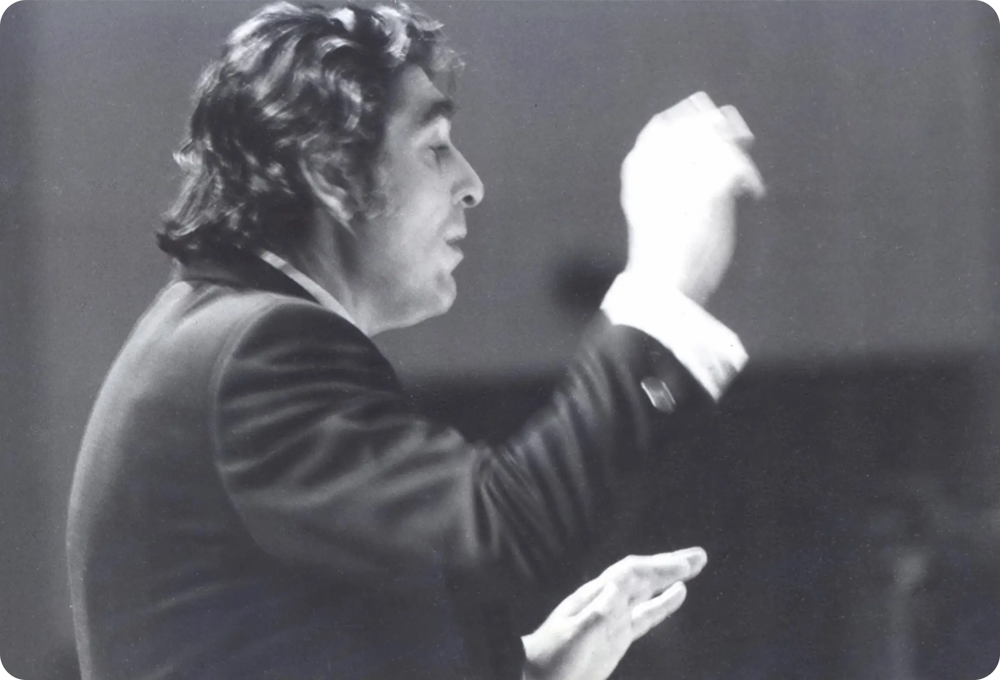
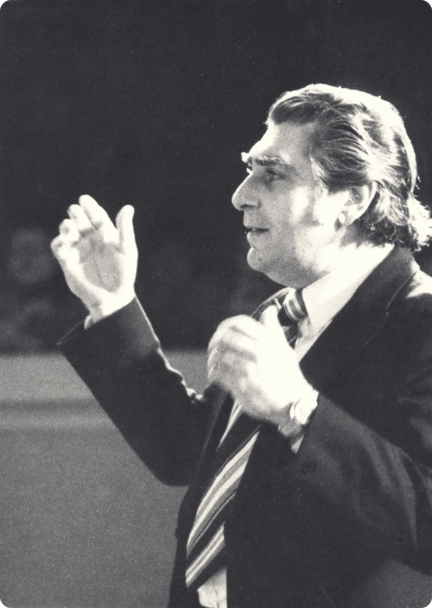
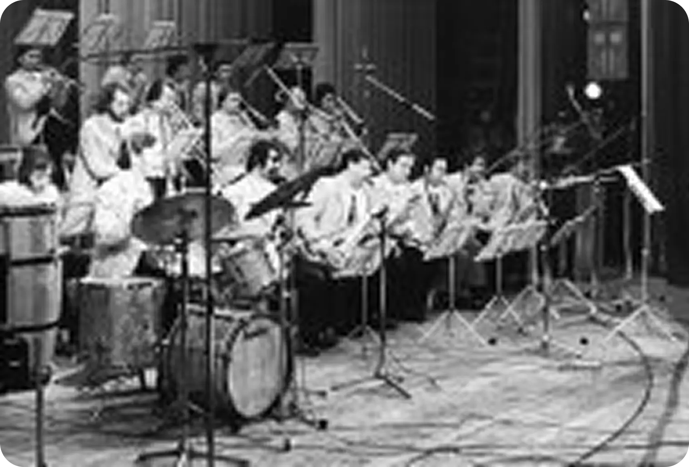
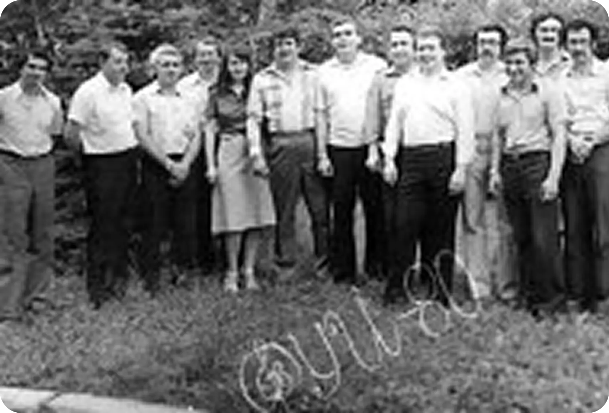
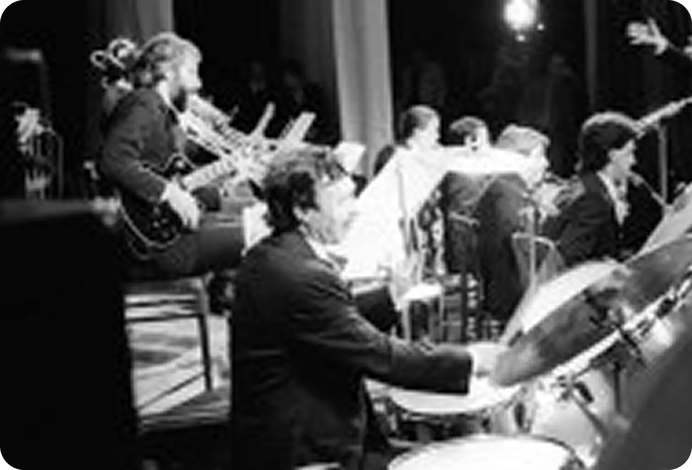
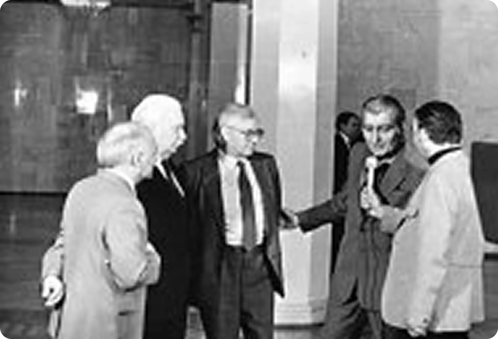
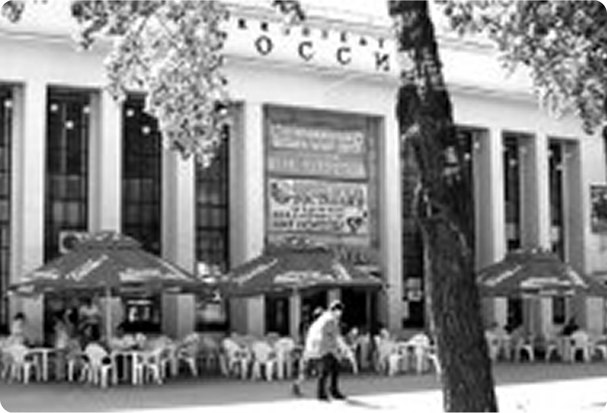

Ким назаретов
Назаретов Ким Аведикович (24.08.1936 — 18.07.1993, Ростов-на-Дону) — руководитель джаз-оркестра, пианист, аранжировщик, композитор, педагог. Заслуженный деятель искусств РСФСР (1985), первый в стране профессор эстрадной и джазовой музыки (1989), сыгравший выдающуюся роль в становлении джаза на Юге России.
Один из основоположников и создателей эстрадно-джазового образования в СССР, первый заведующий отделением эстрадной и джазовой музыки Ростовского училища искусств (1974-1985), первый заведующий кафедрой эстрадной и джазовой музыки в Ростовской государственной консерватории им. С.В. Рахманинова (1982-1993).
Член координационного совета эстрадного образования при Центральном научно-методическом кабинете по учебным заведениям культуры и искусства (1984-1993). Основатель Муниципального джаз-оркестра (1963-1993). Лауреат Международных и отечественных джазовых фестивалей. Председатель жюри международных и отечественных джазовых конкурсов. Автор методических работ и учебных пособий по фортепиано и оркестровому классу для эстрадно-джазовых отделений музыкальных училищ и вузов. Педагог, воспитавший много лауреатов международных и отечественных конкурсов и фестивалей, работающих в России, странах Европы и Америки

Несколько непонятное для сегодняшнего поколения имя «Ким» в 1936 году было достаточно частым и расшифровывалось
очень просто:
Коммунистический интернационал молодёжи. И так уж случилось,
что такое хорошее советское имя теснейшим образом связалось
с нехорошим буржуазным словом «джаз».
Ким прошёл все соответствующие ступени полного музыкального образования (школа-училище-вуз), и на всех этапах его сопровождала любовь к инородному искусству. Училищный педагог — выпускница Московской консерватории (класс профессора Л.Н. Оборина) М.И. Кац — не признавала никакого джаза и видела в Киме блестящего классического пианиста. А вот теоретик Г.М. Барсегян весьма лояльно относился к гармоническим экзерсисам своего студента и даже позволял играть модуляции джазовыми гармониями.
В 1956 году Ким Назаретов с отличием оканчивает училище и поступает в Харьковскую консерваторию. В Харькове Ким
создаёт свой первый оркестр «Дружба». Репертуар черпали из передач Уиллиса Коновера «Час джаза» и трофейных
фильмов, таких, как «Серенада Солнечной долины» и «Джордж из Динки-джаза».
С октября 1960 Ким Назаретов начинает сотрудничество с Харьковским ТЮЗом: сначала как дирижёр оркестра, затем
назначается заведующий музыкальной частью. За три года он написал музыку к восьми спектаклям. Окончание
консерватории (1961) совпало с конкурсом пианистов-выпускников консерваторий Украины, Молдавии и Белоруссии. Ким
принимает участие и занимает I место.
В августе 63-го семья Назаретовых переезжает в Ростов. Ким работает в Ростовском училище искусств и даёт
концерты в филармонии. Но джаз его по-прежнему «не отпускает». Да и мечта о создании джаз-оркестра в Ростове
вдруг показалась совершенно реальной. Уже в сентябре благодаря помощи друга — саксофониста Владимира Попова —
был сформирован первый состав, который через полтора месяца показал свою небольшую программу в кинотеатре
«Россия» приехавшему на гастроли в Донскую столицу оркестру Олега Лундстрема. Вот с этого всё и началось.
Летом 64-го оркестр стал выступать в парке им. Октябрьской революции на танцплощадке «Мелодия» и под этим
названием жил довольно долго. Коллектив не имел «постоянного места жительства», скитался по всевозможным ДК,
что, однако, не мешало делать новые программы и регулярно показывать их в городе.
Одновременно Ким Назаретов работает в театрах (сохранилась музыка к спектаклям «Варшавская мелодия», «Похищение луковиц», «Двадцать лет спустя», «Добрый человек из Сычуани»). В начале 70-х джазменов России потрясли два события. В 1971 году в страну приехал легендарный Дюк Эллингтон со своим уникальным оркестром солистов, а через год — оркестр под управлением трубача и композитора Теда Джонса и барабанщика Мела Луиса. «Живое» исполнение кумиров, конечно же, всколыхнуло творческий потенциал Ростовского джаз-оркестра Кима Назаретова. Музыканты стали искать свой саунд, свою индивидуальную манеру исполнения. Обогатился и расширился репертуар. Наступил судьбоносный для истории отечественного джаза 74-й год: решением Министерства культуры РСФСР в музыкальных училищах двадцати городов России были открыты эстрадные и джазовые отделения (ЭДО). Практически во всех училищах ЭДО было при фортепианном или духовом отделениях. В Донской столице оно сразу стало самостоятельным, поэтому и считается официально «первым в СССР». Открывали его директор РУИ А.И. Безродный, пианист К.А. Назаретов и тромбонист В.Г. Кутов (в последствии — худрук Ростовского джаз-оркестра К. Назаретова).
В 1974-м году часть оркестра (точнее — его «троичный» состав) «переселяется» в концертный зал РУИ, и на его базе создаётся студенческо-педагогический коллектив, который уже в мае 76-го впервые выезжает на джаз-фестиваль в Куйбышев (ныне — Самара). В 77-м оркестр РУИ приглашаются на десятилетие студии «Москворечье» Юрия Козырева (ныне — Московский колледж импровизационной музыки). Эта первая поездка ростовского биг-бэнда в Москву явилась и первым знакомством с Владимиром Фейертагом. В 78-м году ЭДО РУИ произвело пятый набор и вмещало уже около 60 человек. Встал вопрос о втором собственно студенческом оркестре, руководство которого Ким Аведикович возложил на Михаила Радинского. В 1982 году ректор Ростовского Государственного Музыкально-педагогического института (РГМПИ) Анатолий Иванович Кусяков (заслуженный деятель искусств России, профессор композиции) предложил Киму Аведиковичу открыть первый в стране эстрадно-джазовый факультет и в вузе. И вскоре появляется студенческий джаз-оркестр, который К.А. Назаретов поручает вести Юрию Кинусу, сегодняшнему главному дирижёру и художественному руководителю муниципального джаз-оркестра Кима Назаретова.

В 1983-м году ростовский биг-бэнд Кима Назаретова вместе с творческой группой кинематографистов студии «Владикавказ-телефильм» совершают большое концертное турне по России и Северному Кавказу, которое завершилось в московском Государственном театре эстрады. Большую часть репертуара занимала эстрадная и джазовая музыка Мурада Кажлаева, вошедшая в исполнении ростовчан в фильм «Мурад Кажлаев — ритмы и годы» и пластинку «Только ты». В апреле 1984 года Ким Аведикович проводит I Донской фестиваль биг-бэндов страны, на который, помимо коллективов, приехали корифеи отечественного джаза: А.М. Котляровский, В.Е. Терлецкий, Ю.С. Саульский, В.Н. Людвиковский, Г.А. Гаранян. В мае праздновалось десятилетие джазового образования в стране, что послужило поводом для московского смотра-конкурса ЭДО. На этот конкурс Ким Аведикович едет в качестве члена жюри. 1-е место поделили оркестры РУИ п/у Михаила Радинского и московского училища им. Гнесиных п/у Анатолия Кролла. В этом же году Ким Назаретов становится членом Координационного совета эстрадного образования при Центральном научно-методическом кабинете по учебным заведениям культуры и искусства.
В 1985 году в Москве состоялся IX Московский фестиваль джазовой музыки. Выступление на нём биг-бэнда К. Назаретова было записано на пластинку. А 17 мая за заслуги в области советского музыкального искусства Президиум Верховного Совета РСФСР присвоил К.А. Назаретову звание «Заслуженный деятель искусств РСФСР».
1986 год — 50-тилетие Маэстро и 30-тилетие творческой деятельности. Полный аншлаг в Большом зале Ростовской областной филармонии. Передать или хотя бы частично пересказать всё то, что составляло этот грандиозный праздник, совершенно невозможно. Упомяну лишь об одном подарке ветерана отечественного джаза А. Котляревского. Он вручил Киму Аведиковичу большую чеканную медаль с надписью: «Обаятельнейшему человеку, большому музыканту, знатоку джаза, борцу за свинг, создателю биг-бэнда». Этим всё сказано! Весной 87-го по инициативе К. Назаретова в Ростове-на-Дону состоялся Всероссийский конкурс эстрадно-джазовых вокалистов (в жюри Юрий Саульский, Игорь Бриль, Лариса Долина, Гелена Великанова, Ким Назаретов). В апреле Ким провёл II Донской джазовый фестиваль биг-бэндов, который на этот раз был уже международным (участвовали коллективы Германии, Франции, Польши). В декабре 87-го в качестве члена жюри К.А. Назаретов вместе со студентами и выпускниками РГМПИ едет в Польшу в город Калиш на XIV Международный джазовый фестиваль и VII Международный конкурс джазовых пианистов имени Мстислава Косза. Уже в Калише Кима Аведиковича выбирают председателем жюри у пианистов. Дипломантами стали ростовчане Игорь Уколов (выпуск 1985 г.) и студент 3-го курса Михаил Иванов. В 88-м году оркестр пригласили на гастроли в Шотландию в город-побратим Глазго. В этом же году в филармонии Ким Аведикович начинает проводить цикл концертов под рубрикой «Джаз + джаз». В первом отделении играл ансамбль Михаила Иванова, во втором — приезжие гастролёры.
III Донской фестиваль биг-бэндов (апрель 1989) вёл Владимир Фейертаг. Конферанс был неподражаем, с юмором и массой интересных деталей. Кажется, именно тогда Ким метко заметил: «Фейертаг — это Андроников в джазе». В этот же вечер Назаретов очень много солировал на рояле. Инструмент буквально пел. В излюбленной композиции «В мягких тонах» Дюка Эллингтона пианист был особенно неподражаем, играя своим удивительным по красоте звуком, как музыканты его называли «кимовским, бархатным».
В сентябре в Бельгии проходил II Международный конкурс джазовых ансамблей. Из 96 участников в финал прошло только десять, среди которых — единственный коллектив из России — выпускники РГМПИ «Ростов-трио» (братья Ивановы и барабанщик Гедеон Пейсахов), получившие Гран-при. Кстати, именно там родился каламбур: «Ростов-трио из города Назарета». В апреле 1990 году Ким Назаретов в содружестве с ВМО проводит Всероссийский конкура молодых джазовых исполнителей. Победителями стали по существу две школы: московская и ростовская. Осенью этого же года кафедра эстрадной и джазовой музыки РГМПИ вступила в Международную ассоциацию джазовых школ (Глазго), деятельность которой разворачивалась под девизом: «Будущее джаза связано с будущим джазового образования и Международной ассоциации джазовых школ».
С 1991 года Ким Аведикович открывает ежемесячный абонемент «Джаз в полдень», который ему помогал вести Ю.Г. Кинус. В январе 1992-го К.А. Назаретову впервые в России присвоено учёное звание профессора по кафедре эстрадной и джазовой музыки. В этом же году 15 июля был утверждён муниципальный музыкальный центр, а сам биг-бэнд Кима Назаретова наконец получил статус профессионального коллектива. Сразу же оговорили, что Центр будет находиться в кинотеатре «Россия», но арендаторы не спешили освобождать помещение. Несмотря на сложности, ростовский джаз-бэнд подготовил новую программу «Экскурсия по истории джаза» и представил её на Международном джаз-фестивале в г. Кобленц (Германия). За роялем был сам Маэстро. Выступление ростовчан получило широкий резонанс в прессе, а одна статья так просто и называлась — «Гленн Миллер с Дона». 93-й год для К.А. Назаретова был очень напряжённым: бесчисленные концерты, майский фестиваль биг-бэндов в Москве, подготовка к набору в аспирантуру-ассистентуру, серьёзная репетиционная работа перед поездками на фестиваль в Болгарию и гастролями по Германии, вступительные экзамены на ЭДО...
21 декабря 1993 года муниципальный джаз-оркестр Кима Назаретова, наконец, официально переселяется в собственное помещение, но... уже без Кима. У «безоговорочного человека» Кима Аведиковича Назаретова совершенно уникально соединились потрясающий талант Большого Музыканта и Большого Человека. Вот всего лишь один пример. 30 марта 93-го года на концерте Ростовского муниципального биг-бэнда произошло непредвиденное. На сцену вышел вокалист Эдуард Крылов. Ведущая объявляет: «Эдди Рознер, песня «Ничего не знаю» (песню написал Генрик Варс, но исполнял оркестр Рознера). Оркестр играет вступление и певец... забывает слова. Вместо него начинает писать Ким Аведикович. Зал встал! Слова из этой песенки «Я живу любя, и всё!» можно считать девизом Кима Назаретова.
Записи:
М. Кажлаев «Только ты» (1987).
Фестивальные альбомы — «Джаз-84», пл. 3.
«Осенние ритмы-85»,
пл. 1.
«Тбилиси-86», пл. 2.
«Осенние ритмы-88», пл. 1.
«Джаз-оркестр Кима Назаретова» (2002).
«Fair». Муниципальный джаз-оркестр Кима Назаретова 1997-2003 (2003)




